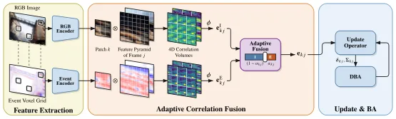
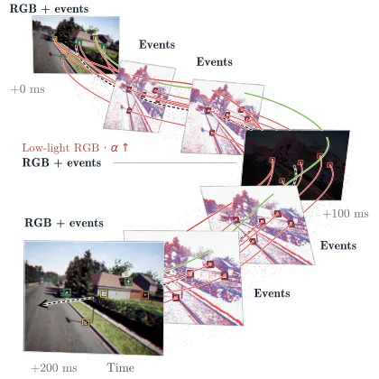
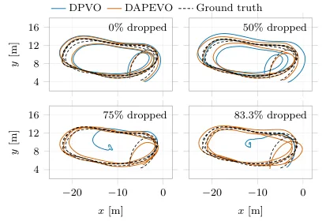

DAPEVO：深度自适应补丁式帧—事件视觉里程计
DAPEVO: Deep Adaptive Patch Frame-Event Visual Odometry
把图像与事件的相关证据分开保留、用逐边学习门控在对应层融合，并把纯事件观测塞进同一张补丁优化图，从而在 RGB 稀疏或退化时显著延缓里程计退化。
ATE under degraded RGB
ATE degradation at 1/6 RGB
per-frame runtime
作者、单位与技术谱系 · Research context
作者与单位
研究脉络
- DPVO: Deep Patch Visual Odometry（Teed, Lipson & Deng, 2023）方法基座关系：提供补丁表示、循环更新算子与可微 BA 的全部几何形式化，本文只替换融合层输入[arXiv 官方 HTML v1]
- DEVO: Deep Event Visual Odometry（Klenk, Motzet, Koestler & Cremers, 3DV 2024）上游方法（事件分支来源）关系：提供事件体素网格、事件补丁选择与事件式里程计的训练设定[arXiv 官方 HTML v1]
- RAMP-VO / Deep Visual Odometry with Events and Frames（Pellerito et al., IROS 2024）上游方法（最直接对照）关系：共享循环表示的帧—事件融合路线，本文的对照与差异定位都围绕它展开[arXiv 官方 HTML v1]
- EDS / Event-aided Direct Sparse Odometry（Hidalgo-Carrió, Gallego & Scaramuzza, CVPR 2022）上游方法（同组前作）关系：同组的帧—事件里程计前作，已被本文列为对照路线[arXiv 官方 HTML v1]
合作网络
- 论文署名与单位DAPEVO 论文署名作者 → 苏黎世大学机器人与感知组（rpg.ifi.uzh.ch）关系：署名单位[arXiv 官方 HTML v1]
- 跨论文共同署名RAMP-VO（Pellerito et al., IROS 2024） → DAPEVO（Gandolfi et al., 2026）关系：共同署名（同一作者接连参与两篇帧—事件里程计工作）[arXiv 官方 HTML v1]
- 框架依赖DAPEVO（补丁图与更新算子） → DPVO 与 DEVO 的公开框架关系：明确技术依赖[arXiv 官方 HTML v1]
- 资助关系欧洲空间局（ESA, 4000150780/25/NL/GLC，Thales Alenia Space France 共同出资）、Horizon Europe（101120732, AUTOASSESS）与 ERC（864042, AGILEFLIGHT） → DAPEVO 研究关系：资助关系[arXiv 官方 HTML v1]
作者、单位与资助来自作者脚注，技术接续来自方法章节与参考文献；跨论文关系只记录可由参考文献作者列表直接核对的共同署名（Pellerito）。除此之外未发现公开证据支持的合作项目或师生关系，不作推断。
方法本质拆解 · What actually changed
是不是微调？
是两阶段训练，且权重确实改过。第一阶段冻结从 DPVO 继承的循环更新算子，训练新的事件编码器与事件补丁打分器；第二阶段冻结两个特征提取器，训练上下文融合 MLP 与相关门控，8000 次迭代后以十分之一的学习率解冻联合微调更新算子。门控与融合 MLP 末层零初始化，因此初始行为等价于图像主导。
有没有额外约束？
约束加在三处：输入侧假设图像与事件共享同一相机内参、事件累积成五箱体素网格；训练侧施加模态级损坏（低光/噪声/模糊/遮挡与时间丢弃/稀疏化/噪声）与 5% 的模态相关体丢弃，以避免融合塌缩到图像分支；跟踪侧用模态感知的关键帧剔除阈值（joint 15 像素、纯事件 25 像素）约束哪些帧可以离开图。
推理/后端到底做了什么？
推理是前馈循环 + 可微 BA 的固定管线：相关性在两模态独立计算、经共享编码器得到嵌入、由门控加权融合后送入循环更新算子预测 2D 流修正与置信度，再交给可微 BA 联合优化位姿与补丁深度。初始化只接受 joint 帧，之后纯事件帧以任意时间戳进入同一优化图。没有全局平差、没有回环，也没有测试期优化或额外后端。
方法本质是什么？
本质是把融合的位置从“特征空间”挪到“对应证据空间”：只要两种模态各自保留匹配证据，就能用一个逐边逐迭代的小门控按当下可靠性配比，从而在一种模态退化时不被另一种拖累；同时把纯事件观测纳入同一补丁图，使跟踪频率可以高于 RGB 帧率。它没有做的是：不做特征级拼接、不引入新后端、不做标定或在线估计内参，也不保证在标称条件下优于纯 RGB。
输入=五箱事件体素网格（可选 RGB，共享内参）；改变的位置=补丁—帧边的相关性融合层与关键帧保留集合；动作=模态独立相关 + 逐边学习门控 + 可微 BA + 模态感知剔除；直接效果=TartanEvent 退化 RGB 下 ATE 0.60 m（对照 >4 m）、3 Hz RGB 下 0.82 m（对照 >9 m）。

动机与问题Motivation
动机与问题
论文指出现有两种范式的缺口很具体：DPVO 只用稀疏补丁做学习型对应精化与可微 BA，DEVO 把它搬到事件体素网格，而 RAMP-VO 这类帧—事件方法把异步到达的图像与事件整合进一个共享循环表示再解码匹配与上下文特征——共享表示虽然实现了多模态估计，却不显式保留并加权各模态自己的证据。作者认为这一区别在某一模态失效时非常重要，因为失效模态的特征会把歧义对应与噪声约束注入补丁图。第二个动机来自事件本身的难点：事件是差分且与运动相关的量测，其对应估计比常规图像匹配更难，因此更需要独立证据而不是彻底丢弃。第三个动机是可用性：RGB 帧在光照差或带宽受限时可能稀疏甚至缺失，但事件流仍在，因此系统需要支持纯事件观测继续跟踪，同时不能让稀缺的帧约束被统一的关键帧剔除规则删掉。
方法Method
方法总览
DAPEVO 建立在 DPVO 的补丁表示与几何形式化之上，并沿用 DEVO 的事件体素与事件补丁选择。每个时间戳系统收到五箱（five-bin）事件体素网格，若可得还有 RGB 图像：两者都在的帧称 joint frame，只有事件的称 event-only frame；论文假设两种模态共享同一相机内参（共享像素阵列或标定好的分光配置），事件帧可以在任意时间戳实例化。几何状态由每帧相机位姿与一批补丁组成，补丁用齐次坐标表示、第四行是各元素共享的常量逆深度，补丁与帧构成二部补丁图，补丁按当前位姿重投影到目标帧。特征侧用两套匹配编码器分别处理图像与事件（128 通道、1/4 分辨率，并平均池化出第二层金字塔）与两套上下文编码器（384 通道）；每个补丁的图像与事件匹配特征从各自源帧裁剪，上下文特征由图像特征作基底加事件残差经两层 MLP 融合，只在补丁实例化时计算一次并共享给该补丁的所有边。相关性在两层金字塔上分别计算得到图像与事件两个相关体，送入共享相关编码器映射成两个模态嵌入，再由一个学习到的线性层加 sigmoid 预测逐边融合权重，得到送入循环更新算子的融合嵌入；若任一端是纯事件帧则只用事件嵌入。循环更新算子与可微 BA 保持 DPVO/DEVO 原样，只把单模态相关输入换成融合嵌入。
关键技术细节
融合权重是逐边、逐迭代预测的：因为它在每个循环迭代重新计算，融合会针对每条边与每个精化步独立自适应，而不是在整个数据集上取一个全局模态配比——消融里把权重固定为数据集均值（0.99 m）或以 0.5 等权（0.99 m）都显著差于自适应（0.60 m）正好验证了这一点。为了不让融合在标称条件下塌缩到更强的图像分支，训练同时施加模态级输入损坏与模态丢弃：图像损坏包括低光增强、噪声、模糊与遮挡，事件损坏包括时间丢弃、事件稀疏化与噪声；此外各以 5% 的比例独立丢弃图像与事件相关体，使循环更新算子暴露在单模态观测下。训练分两阶段：第一阶段冻结预训练的 DPVO 更新算子、训练事件匹配/上下文编码器与事件补丁打分器，学习与图像特征兼容的事件表示；第二阶段冻结两个特征提取器，优化上下文融合 MLP 与相关门控，并在 8000 次迭代后解冻循环更新算子、用低十倍的（原文为十分之一）学习率联合微调；门控初始化为零权重与零偏置，因此起点是图像主导，融合 MLP 最后一层也初始化为零。纯事件跟踪方面，初始化阶段只用 joint frame、丢弃纯事件帧，初始化完成后两者都进入优化图；模态感知的关键帧剔除是 DPVO 剔除准则的变体，用“候选帧可用的模态对应的最近前/后帧”评估投影运动，joint 候选低于 15 像素、纯事件候选低于 25 像素时被移除。工程侧作者在不改网络结构的前提下重写了 DPVO 运行时（批量聚合替代通用 scatter、静态半精度与编译、相关核共享内存暂存与 channels-last 向量化），把 DPVO 在 Quadro RTX 8000 上的单帧耗时从 55.8 ms 降到 23.8 ms。

实验Experiments
实验设置
数据集与划分：TartanEvent（由 TartanAir 生成的合成事件、图像与真值轨迹）取 32 段验证划分，并额外用 ECCV 2020 SLAM 竞赛单目划分做留出测试；UZH-FPV 用于激进四旋翼运动；HKU 单目序列用于挑战光照与高动态范围；MVSEC 的四段室内飞行序列。指标：TartanEvent 与 UZH-FPV 报告对齐后的绝对轨迹误差（ATE），TartanEvent 另报 ATE 在 1 m 以内的经验累积分布面积（AUC）；HKU、UZH-FPV 与 MVSEC 报告平均位置误差（MPE，即按真值轨迹长度归一化的平均位置误差百分比），HKU 沿用 PL-EVIO 的做法用前若干秒对齐并固定该变换，DPVO/DEVO/RAMP-VO/DAPEVO 的对齐还额外估计全局尺度。对照包含 DPVO、DEVO、RAMP-VO、Feature Fusion 变体，以及经典与事件方法（ORB-SLAM3、DSO、COLMAP、DROID-SLAM、DROID-VO、VINS-Mono/Fusion、Ultimate SLAM、PL-EVIO、ESVO、EVO、ESVIO 等），表中 fail 表示原文献显式报告失败。实现为单张 RTX8000 训练，全部实验用 DPVO 默认配置、每帧 96 个补丁；融合阶段按 50% 图像损坏、15% 事件损坏、35% 不加损坏的比例构造训练序列。
实验数字与比较
① TartanEvent（AUC / ATE，m）：标称条件下 DPVO 0.83/0.17、RAMP-VO 0.85/0.15、DAPEVO 0.85/0.15、仅事件 DEVO 0.56/0.87；退化 RGB 下 DPVO 0.14/4.96、RAMP-VO 0.14/7.01、同协议训练的 Feature Fusion 变体 0.50/1.68、DAPEVO 0.63/0.60，即 DAPEVO 相对特征拼接变体的 ATE 降低约 64%。② 降低 RGB 帧率（表 6，AUC / ATE）：15 Hz 时 DPVO 0.80/0.39、RAMP-VO 0.74/0.45、DAPEVO 0.79/0.21；6 Hz 时 0.48/1.70、0.39/3.33、0.73/0.31；3 Hz 时 0.09/9.58、0.08/9.97、0.58/0.82。③ UZH-FPV（表 2，MPE % 平均）：VINS-Mono 0.81、PL-EVIO 0.69、DEVO 0.53、DPVO 0.52、DAPEVO 0.46；Ultimate SLAM 多数序列 fail。④ UZH-FPV 逐帧丢弃：DAPEVO 平均 ATE 由 1.00 m 增至 1.36 m（+36%），DPVO 与 RAMP-VO 分别上升 3.7 倍与 3.1 倍。⑤ HKU 单目（表 3，五次试验的 mean/median）：DPVO 平均 2.32/0.21、DAPEVO 0.19/0.19；差异主要由 DPVO 在 d2l2 上的 22.55 均值/0.30 中位拖累，DAPEVO 为 0.19/0.19，说明其在挑战光照下的重复试验一致性更好。⑥ MVSEC 室内飞行（表 4，平均 MPE）：DAPEVO 0.19、RGB-only DPVO 0.17、仅事件 DEVO 0.46，同时优于 ESVIO 1.99 与 PL-EVIO 2.08。⑦ 留出的 ECCV 2020 竞赛划分（表 5，平均 ATE）：ORB-SLAM3 14.38、COLMAP 12.50、DROID-SLAM 0.33、DROID-VO 0.58、DPVO 0.21、RAMP-VO 0.17、DAPEVO 0.19，DAPEVO 排名第二并在 16 段中的 7 段取得最好或并列最好。⑧ 运行时：优化后 DPVO 从 55.8 ms/帧降到 23.8 ms/帧（Quadro RTX 8000），同一配置下 DAPEVO 全 joint 输入为 36.5 ms/帧（相对优化后 DPVO 高出 53%）；RTX 5090 上分别为 7.5 ms 与 10.2 ms（高出 36%）。
消融/失败边界
融合权重消融（表 7，AUC / ATE）给出最直接的分界：标称条件下纯 RGB 匹配 0.87/0.13 最好、固定数据集均值 0.84/0.16、等权 0.82/0.19、纯事件 0.58/0.96、自适应 0.85/0.15——说明标称条件下自适应融合只是接近而略逊于纯 RGB；退化条件下纯 RGB 崩到 0.19/5.04、数据集均值与等权都为 0.57/0.99、纯事件 0.59/0.73、自适应 0.63/0.60，说明增益来自“逐观测自适应”而不是“整体上更偏向事件”。作者还用融合权重分布佐证：同一序列上事件融合权重的均值从标称条件下约 0.4 升到退化条件下约 0.6–0.8，即模型确实按观测质量重新配比。关键帧剔除消融（表 8，5 Hz RGB，AUC / ATE / joint 保留比例）：原准则 (15,15) 为 0.57/0.70/0.20，原准则 (15,25) 为 0.64/0.71/0.57，子图准则 (15,15) 为 0.66/0.39/0.54，子图准则 (15,25) 为 0.69/0.35/0.74，即模态感知剔除把 joint 关键帧占比从 20% 提到 74%、ATE 从 0.70 m 降到 0.35 m。补丁选择消融：把 DPVO 的随机采样换成 DEVO 的事件补丁打分器没有损害帧-only 跟踪（作者报告 AUC 上升、ATE 下降，具体数值在官方 HTML 中被公式渲染吞掉，待核验）。失败与边界：论文没有独立的 Limitations 章节，但从实验协议可读出四条——融合增益只在图像可靠性下降时显现；纯事件帧在初始化阶段无法使用；关键帧剔除阈值（15/25 像素）与分辨率绑定，换分辨率必须重调；标称条件下它在留出竞赛划分上仍落后 RAMP-VO。
局限与迁移Limitations & Transfer
局限与待核验
本文没有专门写 Limitations，讨论一节只复述了结论，因此“作者明确承认的限制”几乎没有，这本身是一个可核查的缺口；我们能从正文证据里读出的边界是：模态共享内参的假设（共享像素阵列或标定分光）在多数真实双传感器平台上需要额外标定；事件只能在初始化之后进入优化图；阈值与分辨率绑定；融合在标称条件下不带来增益甚至略逊纯 RGB。我们的待核验项有四条：① 表 1 标称条件下 DAPEVO 与 RAMP-VO 的 AUC/ATE 在报告精度下完全相同（0.85/0.15），论文据此称“一致”，但缺少统计重复次数的说明（竞赛划分一处给了五次试验中位数，验证划分未给），跨方法的微小差异不宜过度解读；② 补丁选择消融与部分正文数字（如融合权重均值、若干百分比）在官方 HTML 中被公式渲染吞掉，需回到 PDF/TeX 才能引用；③ 训练数据是合成 TartanEvent，真实 UZH-FPV 上的结论主要落在 MPE 与逐帧丢弃曲线，未报告真实退化（雾、强光）专项实验；④ 作者在致谢中声明用大模型协助生成图 1、图 2 并编辑文稿，图件生成方式与本文结论无关但影响可复现性描述。
与你研究路线的关系
可迁移模块有三处。① “不做早期特征拼接、而是在证据/相似度层保留各模态再逐样本自适应加权”是一条通用融合策略，可以直接对照我们在 GNSS/视觉/IMU 融合里手工设计的权重与协方差；值得在我们现有的因子图里做一次“固定权重 vs 逐次自适应权重”的最小 A/B，并用退化场景（遮挡、弱卫星几何）的 ATE 变化量化收益。② “在同一张优化图里容纳异步、异构量测”（纯事件帧可在任意时间戳实例化、与 joint 帧共享状态）与我们处理异步 GNSS/IMU 更新、时间不同步量测的图结构同构，是补丁图版本的可借鉴实现。③ 模态感知关键帧剔除给出的原则是“少而关键的观测不能被统一阈值删掉”，对应我们按观测质量与退化程度决定保留策略的做法。一步实验：在我们的融合框架中固定其余条件，只替换关联/观测权重为学习型自适应门控，观察在退化条件下的误差与一致性收益，再决定是否值得引入学习组件。明确的停留点：本文不处理 GNSS 与模糊度，也不含回环与全局平差（对照表中 loop closure 列为空），它是前端里程计侧的模块。

